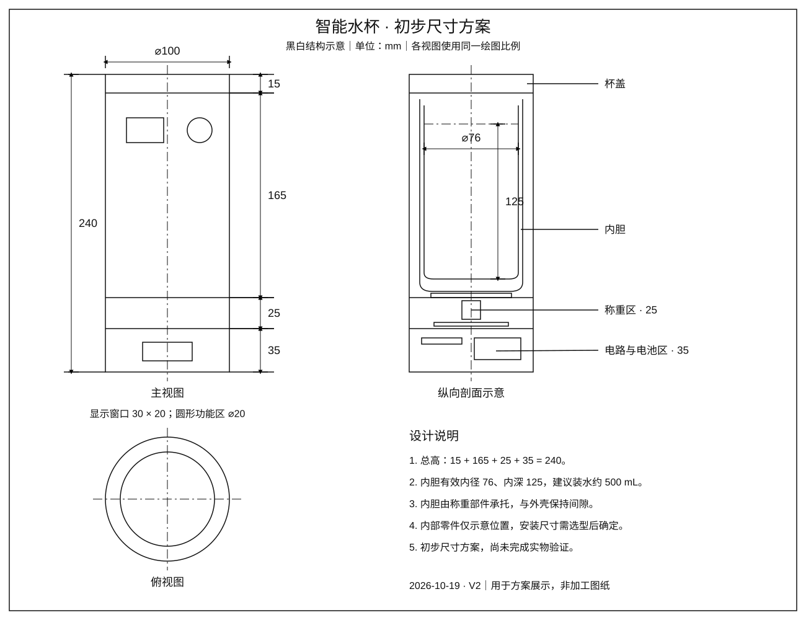

ESP32 智能水杯ESP32 Smart Cup
带领团队围绕日常饮水场景开发智能水杯，把设备端感知、语音交互和移动端连接起来，实现动态监测与喝水提醒。
Led a team project for a connected cup that brings together device-side sensing, voice interaction, and mobile access for monitoring and hydration reminders.
“毛宗源杯”智能控制设计大赛 · 优胜奖Mao Zongyuan Cup · Intelligent Control Design Competition · Merit Award

项目介绍Project information
概述Overview
项目以 ESP32 为设备端核心，将动态监测、无线连接和喝水提醒结合起来。语音、小程序与 App 提供不同的交互入口，把杯端功能延伸到手机，让日常饮水场景中的状态查看与提醒更方便。
Built around ESP32, the project connects device monitoring, wireless communication, and hydration reminders. Voice, mini-program, and app interfaces bring the cup and phone together in an everyday drinking routine.
技术栈Technology
- ESP32
- 嵌入式主控，连接设备端监测、交互与提醒功能。Embedded controller connecting device monitoring, interaction, and reminder functions.
- Wi‑Fi · Bluetooth
- 小程序通过 Wi‑Fi 与设备交互，App 通过蓝牙提供手机端交互入口。Wi‑Fi mini-program interaction and Bluetooth connectivity for the mobile app.
- 语音与移动端Voice and mobile UI
- 将语音、小程序与 App 连接到同一饮水场景，覆盖状态查看、设备交互与喝水提醒。Voice, mini-program, and app interfaces support device interaction, status viewing, and hydration reminders.
- 系统集成System integration
- 把传感器、主控、无线连接和用户交互组织成设备端与手机端协同的完整系统。Integration of sensing, embedded control, wireless links, and user interfaces across the cup and mobile device.
硬件设计Hardware design
从杯身外观到内部布局，设计草稿围绕内胆承载、重量采集与底部电子夹层展开，同时把显示和实体按键融入杯身。以下为图中的结构设计方案。
The concept brings together the cup body, vessel support, weight acquisition, and a lower electronics compartment, with display and button areas integrated into the exterior.
- 内胆与承载结构Vessel and support
- 内胆下方布置承载平台，为称重传感器提供受力位置，底部夹层容纳电子部件。A support platform beneath the inner vessel provides a load path to the weighing sensor; the base houses the electronics.
- 称重传感器 · HX711Load cell · HX711
- 草稿中的重量感知链路：称重传感器接入 HX711 采集模块，再与 ESP32 主控连接，为饮水量监测提供设计基础。The proposed sensing path connects the load cell to an HX711 acquisition module and then to the ESP32, providing a basis for monitoring water consumption.
- 显示与实体交互Display and physical UI
- 杯身安排温度显示区域与实体按键，将本地状态呈现和操作入口融入外观设计。A temperature-display area and physical button integrate local status feedback and interaction into the cup body.
- 底部电子夹层Electronics compartment
- 在杯底集中安排采集模块、连接线与供电空间，并与内胆区域分层布局。The base groups the acquisition module, wiring, and power space in a separate layer beneath the vessel.
